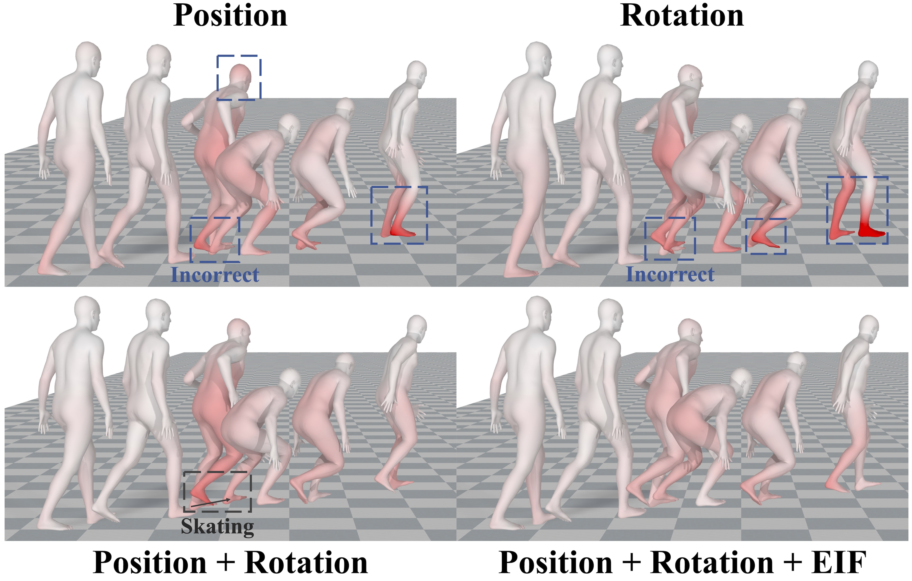
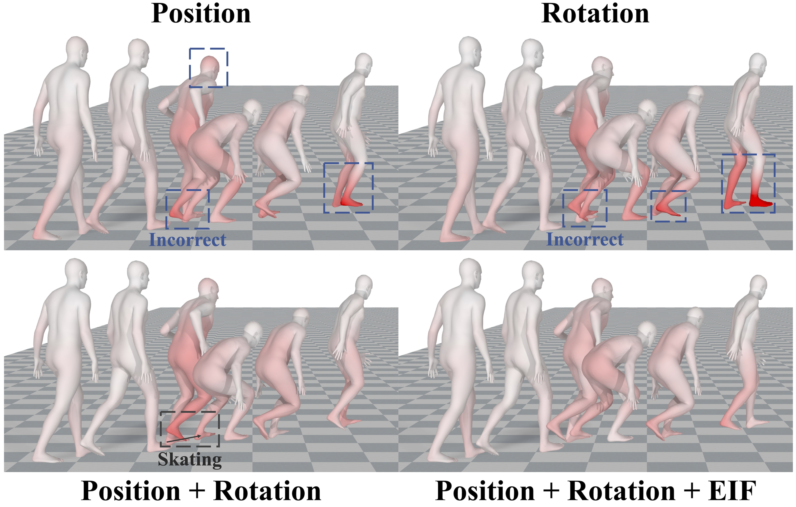
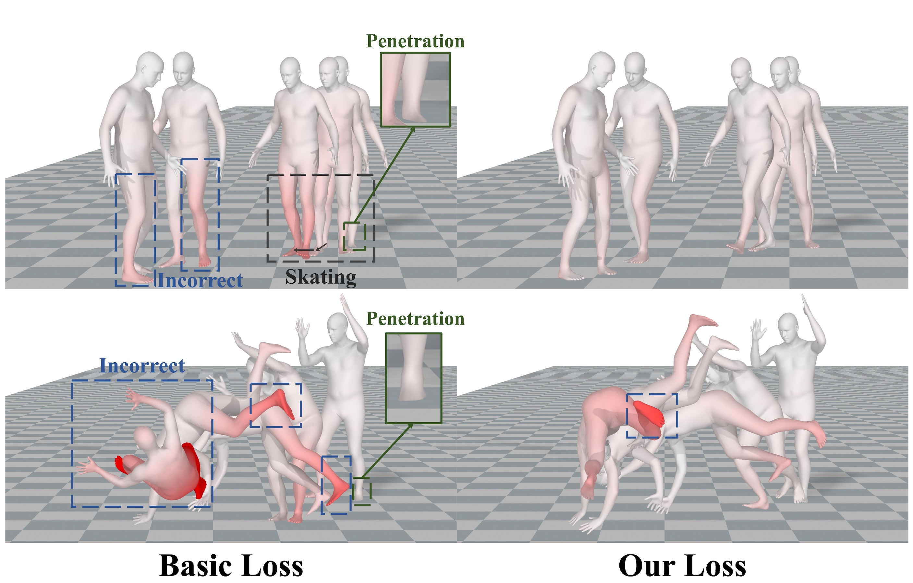

Different Features
Ablation study for our method with four different generated features, in which the errors are color-coded in red.
To bridge the physical and virtual worlds for rapidly developed VR/AR applications, the ability to realistically drive 3D full-body avatars is of great significance. Although real-time body tracking with only the head-mounted displays (HMDs) and hand controllers is heavily under-constrained, a carefully designed end-to-end neural network is of great potential to solve the problem by learning from large-scale motion data. To this end, we propose a two-stage framework that can obtain accurate and smooth full-body motions with the three tracking signals of head and hands only. Our framework explicitly models the joint-level features in the first stage and utilizes them as spatiotemporal tokens for alternating spatial and temporal transformer blocks to capture joint-level correlations in the second stage. Furthermore, we design a set of loss terms to constrain the task of a high degree of freedom, such that we can exploit the potential of our joint-level modeling. With extensive experiments on the AMASS motion dataset and real-captured data, we validate the effectiveness of our designs and show our proposed method can achieve more accurate and smooth motion compared to existing approaches.

Ablation study for our method with four different generated features, in which the errors are color-coded in red.
Ablation study for our method with different loss settings, in which the errors are color-coded in red.

@inproceedings{zheng2023realistic,
title={Realistic Full-Body Tracking from Sparse Observations via Joint-Level Modeling},
author={Zheng, Xiaozheng and Su, Zhuo and Wen, Chao and Xue, Zhou and Jin, Xiaojie},
booktitle={Proceedings of the IEEE/CVF International Conference on Computer Vision (ICCV)},
year={2023}}